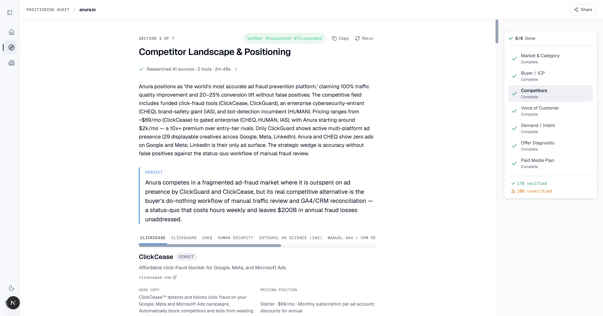

The run proves the pipeline can complete and preserve honest gaps. It does not prove 9/10 strategist quality because the paid-media plan failed the Media-Plan SOP stress test: it produced a Meta-first $3k/mo plan instead of high-ACV LinkedIn + Google.
| Event | Evidence | Verdict |
|---|---|---|
| API doctor | DeepSeek, Perplexity, Firecrawl, Brave, SearchAPI, SpyFu, Foreplay OK. Anthropic returned 401 auth_failed. | WARN |
| Core fanout | Six positioning sections launched in parallel. Four completed on first attempt; Market and Buyer ICP failed validation. | PARTIAL |
| One post-fanout rerun | Manual authenticated reruns queued Market and Buyer. Market committed. Buyer exposed a live bug: model-authored nested personaReality.evidenceGap keys failed strict schema parse. | BUG FOUND |
| Surgical fix | Normalizer now strips illegal nested Buyer ICP evidence-gap keys before schema parse and commits the runner-owned body-level evidence gap. Regression added in run-section-corpus-only.test.ts. | FIXED |
| Post-fix Buyer rerun | dce40c67-01b5-4f55-96d5-610cb20fdadd committed at 2026-06-10T05:49:58Z. | RECOVERED |
| Paid Media | Auto-dispatched after 6/6, committed as needs_review at 2026-06-10T05:54:21Z. | COMPLETE |
This is a green structural E2E after a live surgical fix, not a clean first-pass run. That distinction matters for branch signoff.
| Check class | Result | Detail |
|---|---|---|
| Run-level status, rollup, profile persistence | PASS | artifact complete, children 6/6, one profile_persisted event. |
| Zone completion | PASS | corpus + six positioning sections + paid media committed. |
| Rollup scoping | PASS | six core sections count toward rollup; paid media and corpus do not. |
| Source presence | PASS | Market 9, Buyer 11, Competitor 41, VoC 21, Demand 18, Offer 8, Paid Media 13. |
| Competitor ad wall | PASS | No idk, no compound advertiser names, 58 displayable ads across ClickCease, ClickGuard, CHEQ. |
| Paid-media placeholders | PASS | No $[Budget], no [brief:, monthly budget resolved as $3,000 / month. |
| Advisory badges | WARN | Buyer, VoC, Demand are insufficient; Market and Paid Media are needs_review. |
Command: node scripts/zz-verify-e2e-run.mjs 89135f99-7137-4ccd-9b33-e883bb2f9a40 exited 0.
| Section | Score | Client-ready? | Assessment |
|---|---|---|---|
| Corpus / brief prefill | 7 / 10 | No, but useful | Correct company, category, value prop, docs, G2, and product surfaces. Public prefill missed pricing, competitors, testimonials, geography, and case studies. The user-supplied Anura brief was needed to restore budget, ACV, CPDemo targets, and ICP. |
| Market & Category | 7 / 10 | Skim edit needed | Strong strategic wedge: enter ad-fraud detection, message false-positive avoidance. Review removed six unsupported estimates, so the committed section is honest but not client-ready without validating market-size and competitor-funding claims. |
| Buyer / ICP | 5 / 10 | No | Honest evidence gap is better than fabricated personas. It found one named buyer persona against a required five and labeled the gap. Useful as a sourcing to-do, not as a final ICP artifact. |
| Competitor Landscape | 8 / 10 | Mostly | Best section. 41 sources, verified badge, ClickCease/ClickGuard/CHEQ ad wall, no wrong-company or compound advertiser failures after the fix. Review unavailable, so a strategist should still skim for unsupported claims. |
| Voice of Customer | 4 / 10 | No | Honest gap state. It did not fabricate quotes, but it does not give a strategist enough buyer language to use. Needs customer interviews, review scraping, call notes, or first-party proof. |
| Demand / Intent | 7 / 10 | Skim edit needed | Useful keyword ceiling and SpyFu estimates: roughly 520 searches/month across sourced ad-fraud terms. Review unavailable and some assumptions remain, but this is usable for direction. |
| Offer Diagnostic | 7 / 10 | Skim edit needed | Correctly identifies proof density and gated trial friction as bottlenecks. Verified badge. Needs a strategist pass to align with Anura's internal claims policy and avoid overusing public conversion-lift claims. |
| Paid Media Plan | 4 / 10 | No | Structurally complete but strategically wrong against the SOP stress test. It chose Meta Advertising at $3k/mo and split into Meta audiences. For high-ACV Anura, the rubric expected LinkedIn + Google and no Meta. This is the biggest quality bottleneck remaining. |
The plan failed the user-confirmed Media-Plan SOP rubric.
| SOP expectation | Anura output | Impact |
|---|---|---|
| High ACV / enterprise motion: LinkedIn + Google; avoid Meta. | campaignOverview.platform = "Meta Advertising" | Wrong channel strategy for the stress test. |
| Google minimum: $5k/mo; LinkedIn minimum: $5k/mo; Meta minimum: $3k/mo. | $3,000 / month, $100 / day, Meta Phase 1/2. | Budget math is internally consistent but follows the wrong platform branch. |
| Use Anura's current Google performance and high-ticket economics. | Channel suggestions say keep Google at current ~$5k/mo, but the campaign plan itself remains Meta-first. | The recommendation contradicts the generated plan. |
| Projected-results table with KPI cost, objective, duration, budget, projected results. | Slots exist (2 phases, 3 audiences, 4 angles, 8 creatives, 3 funnels, 3 KPIs), but the plan is not a SOP-shaped projected-results table. | Not handoff-ready for SaaSLaunch media planning. |
This is not a schema bug; it is an instruction/rubric integration gap. The plan warned that full SOP media-plan schema refit was out of scope, and this run proves why that phase is needed.
The Competitor section rendered in the browser with Verified - 78 supported - 87% grounded, 41 sources, and competitor tabs for ClickCease, ClickGuard, CHEQ, HUMAN Security, IAS, and status quo. The UI is readable and no longer shows idk or compound advertisers.

The first viewport shows competitor positioning and tabs, not individual ad creatives. JSON gate confirms 58 displayable ads. A future UI report should scroll/capture the creative rows directly.
| Dimension | Checkle baseline | Anura run |
|---|---|---|
| Structural E2E | PASS | PASS after surgical Buyer ICP fix |
| Fabrication behavior | Improved versus 06-09; still needed caveats | Better honesty: multiple unsupported items removed or labeled, honest VoC/Buyer gaps preserved |
| Ad wall | Probed-zero and tabbed UI validated | 58 displayable competitor ads; wrong-company/compound-name gate held |
| Paid media | Budget placeholders fixed and structural slots passed | Placeholders fixed, but SOP channel logic failed on high-ACV Anura |
| Client readiness | Roughly 7/10 with caveats | 6.4/10 because the media plan is not handoff-ready |
| Workstream | Implementation |
|---|---|
| W1 API doctor | Added scripts/zz-api-doctor.mjs and npm run api:doctor; probes provider health and env-name drift with scrubbed secrets. |
| W2 deadline lifecycle | Threaded deadlineAt, per-call timeout caps, repair floors, deadline-aware salvage, and one-post-fanout retry logic. |
| W3 review detach | Agentic review now schedules after commit and cannot block original artifact persistence. Review patch omits terminal status. Default review model moved off Anthropic to DeepSeek with thinking disabled. |
| W4 lookup budgets | Buyer ICP lookup headroom 4 -> 6, Demand Intent 5 -> 7, Offer unchanged. |
| W5 Foreplay | Ported Foreplay as a fourth ad-library provider behind FOREPLAY_API_KEY, with domain-to-brand lookup and graceful degradation. |
| W6 badge copy | Copy now distinguishes unsupported claims from honest evidence gaps/labeled assumptions. |
| Live bug fix | Buyer ICP normalizer strips illegal nested evidence-gap keys before strict schema parse; regression added. |
Structural gate passed. Full tests passed after the surgical Buyer ICP normalizer and W3 model-default patch: 193 files passed, 1 skipped; 1748 tests passed, 1 skipped. Production build also passed.
Full lint still exits 1 on pre-existing debt in scripts/zz-claim-source-verifier.ts and ignored/probe-style tmp/*.ts files. Touched-file lint has zero errors.
Do not call this 9/10 yet. The most important user-facing artifact, Paid Media, failed the high-ACV SOP channel branch.